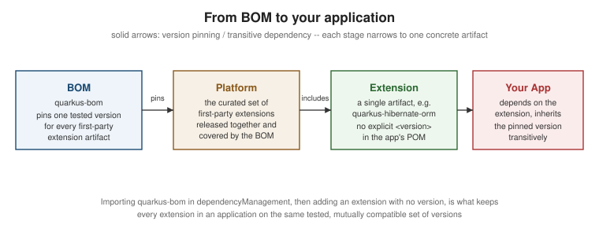

Extensions and the Platform
|
This content was generated with the assistance of AI and should be verified against the official documentation before being relied on in production. |
Almost everything Quarkus does — even core HTTP and CDI support — is built as an extension. This page explains what an extension actually is, how the platform BOM keeps a whole set of them on compatible versions, where extensions are discovered and how conflicts between them are detected, and the CLI/Maven/Gradle commands used to add, list, remove, and update them.
What an extension is
A Quarkus extension is a Quarkus-specific packaging of a library or integration that does two things at once:
-
At runtime, it behaves like an ordinary library dependency — CDI beans, configuration classes, client code.
-
At build time, it contributes augmentation logic: build steps and recorders that run while Quarkus builds the application, deciding what actually needs to exist at runtime (which beans to register, which reflection metadata to keep, which configuration to bake in) so the runtime footprint stays small and startup stays fast.
This build-time/runtime split is not a special case reserved for a few "framework" modules — it is how Quarkus itself is built. HTTP support, CDI (Arc), configuration, even the core bootstrap, are each "just" extensions following the same augmentation model that a third-party extension uses. There is no privileged, non-extension core sitting underneath them.
The platform BOM, the wider universe, and Quarkiverse
Because an application typically combines many extensions, Quarkus ships a platform BOM,
io.quarkus.platform:quarkus-bom, imported once in dependencyManagement. It pins a single, tested version for
every first-party extension in that Quarkus release, so an application never has to work out by hand which
version of quarkus-hibernate-orm is compatible with which version of quarkus-resteasy-reactive.
Beyond the core BOM, Quarkus also talks about a wider "universe" of BOMs — additional platform-style BOMs (for example ones bundling extensions for a particular cloud vendor or a broader curated stack) that extend the same pinning idea to a larger set of artifacts, still published and tested as a unit.
Quarkiverse (https://quarkiverse.github.io/) is different again: it is the community extension ecosystem,
hosted as its own GitHub organization outside the core quarkusio org, where extensions for individual
libraries and services are maintained independently of the Quarkus core release train.
The extension registry
registry.quarkus.io is the machine-readable catalog of published extensions that
the CLI and IDE tooling query when resolving names like rest-jackson to concrete artifacts and metadata.
code.quarkus.io is the human-facing project generator built on top of that same
registry — pick a Quarkus version and a set of extensions in the browser, and it produces a downloadable
project skeleton equivalent to what the CLI would scaffold.
Capabilities and conflicting extensions
Extension metadata can declare capabilities — named contracts an extension provides or requires. Quarkus
uses capabilities to detect when two extensions cannot coexist: for example, only one extension may provide the
JSON provider capability at a time, so adding both quarkus-resteasy-reactive-jackson and
quarkus-resteasy-reactive-jsonb (or their rest-jackson / rest-jsonb equivalents) to the same application
triggers a build-time conflict, because both compete for the same capability rather than being additive.
Maturity levels and support scopes
Extension metadata also carries a stability/maturity signal, and the level attached to an extension is a useful guide to how much a project should rely on it:
-
Stable: the default expectation for Quarkus core extensions — the subset that is also the commercially-supported baseline in Red Hat’s build of Quarkus.
-
Preview: the API is expected to work but may still change in a minor release.
-
Experimental: early-stage, no compatibility guarantees yet.
Quarkiverse extensions sit outside this scale entirely in terms of guarantees: they carry no first-party support commitment from the Quarkus core team, regardless of how mature or widely used an individual Quarkiverse project is in practice.
Adding, listing, and removing extensions
CLI
quarkus extension add hibernate-orm-panache
quarkus extension list
quarkus extension remove hibernate-orm-panachequarkus extension list shows both the extensions already present in the project and the ones available to
add, marked accordingly.
Maven
./mvnw quarkus:add-extension -Dextensions="rest-jackson,hibernate-orm-panache"
./mvnw quarkus:list-extensionsGradle
./gradlew addExtension --extensions="rest-jackson,hibernate-orm-panache"
./gradlew listExtensionsUpdating a project across Quarkus versions
quarkus update (CLI) or ./mvnw quarkus:update (Maven) migrates a project to a newer Quarkus version using
recipe-based source transformations powered by OpenRewrite under the hood — applying the mechanical changes (renamed artifacts, moved packages, updated configuration keys) that a version
bump typically requires, rather than leaving them to be found by trial and error:
quarkus update
# or, from Maven:
./mvnw quarkus:updateDependency management: never pin an extension version yourself
The quarkus-bom import belongs in dependencyManagement, with its version tied to the target Quarkus platform
release. Individual extension <dependency> entries should not carry an explicit <version> — the
imported BOM supplies the correct, tested version for that platform release automatically:
<dependencyManagement>
<dependencies>
<dependency>
<groupId>io.quarkus.platform</groupId>
<artifactId>quarkus-bom</artifactId>
<version>3.39.0</version>
<type>pom</type>
<scope>import</scope>
</dependency>
</dependencies>
</dependencyManagement>
<dependencies>
<dependency>
<groupId>io.quarkus</groupId>
<artifactId>quarkus-hibernate-orm</artifactId>
</dependency>
<dependency>
<groupId>io.quarkus</groupId>
<artifactId>quarkus-rest-jackson</artifactId>
</dependency>
</dependencies>Adding an explicit <version> to an individual extension overrides the version the BOM chose for that release,
which risks pulling in a version of that extension that was never tested against the rest of the pinned set — an untested, potentially incompatible combination. If a project genuinely needs a version other than the one the
platform pins, that is a signal to reconsider the Quarkus platform version for the whole project, not to pin one
extension in isolation.
The diagram below summarizes how a version chosen once in the BOM flows down to the application:

Notable Quarkiverse extensions used elsewhere in this reference
The following Quarkiverse extensions are used by other pages in this reference section but are out of scope for deep coverage here — each is documented where it is actually used:
-
HashiCorp Vault — secrets and dynamic credentials via the Quarkiverse Vault extension: https://github.com/quarkiverse/quarkus-vault.
-
Neo4j — graph database access via the Quarkiverse Neo4j extension: https://github.com/quarkiverse/quarkus-neo4j.
-
DynamoDB — part of the Quarkiverse Amazon Services family of extensions: https://github.com/quarkiverse/quarkus-amazon-services.
-
LangChain4j — LLM orchestration via the Quarkiverse LangChain4j integration: https://docs.langchain4j.dev/tutorials/quarkus-integration; see also database/vector-rag/integrating-with-langchain.adoc#langchain4j for LangChain4j’s RAG and vector-store abstractions, and LangChain4j for the full LangChain4j reference (AiServices, tools, memory).
-
Java Operator SDK — building Kubernetes operators via the Quarkiverse Operator SDK extension: https://github.com/quarkiverse/quarkus-operator-sdk.